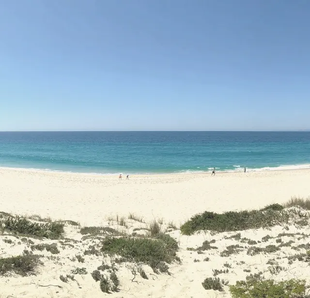
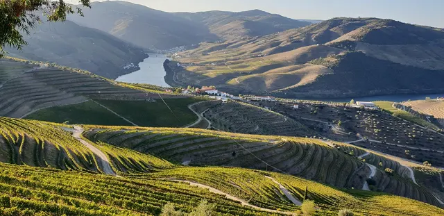
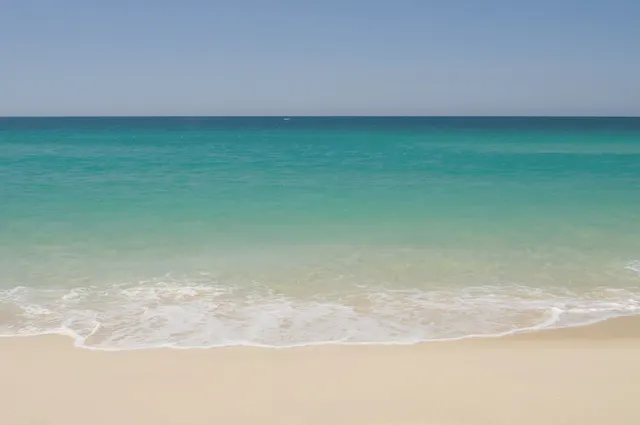
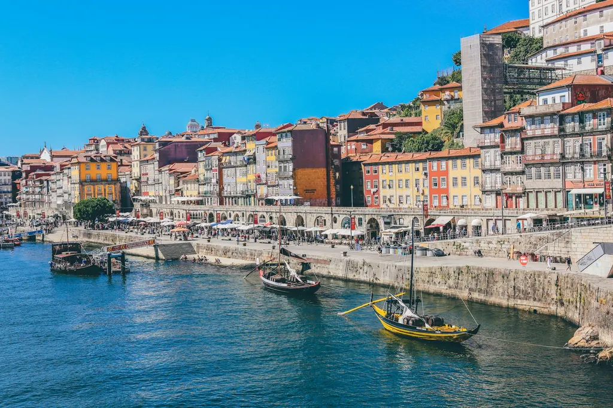
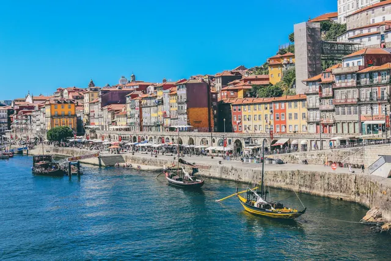
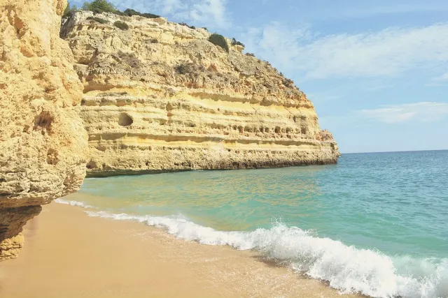

Prompt 63. Sete momentos, o assistente, o cartão, a mesa, os passos e o guardar. Telemóvel, português. Fotografias da nossa biblioteca; números do INE (mediana das vendas por m², 2.º trimestre de 2026) e do simulador do site. Marcas dos parceiros fictícias ("Exemplo"). Nada disto está construído no site.
Imóveis Portugal
Sete toques. No fim, um Portugal que é seu.
ComeçarSem conta. Ninguém lhe telefona.

Mar
VinhaRio, então. Vou mostrar-lhe primeiro os lugares com água à porta.


Gosto450 000 €

INE, valor mediano das vendas por m², 2.º trimestre de 2026. Custos para segunda habitação, não residente, sem crédito, pelo simulador do site.
Quando quer cá estar? Uma estação chega; pode mudar quando quiser.
Verão de 2027. Chega a tempo do São João, a 23 de junho.
Idades das crianças, se quiser
Há escolas internacionais no Porto. Quer que as mostre perto das casas que guardar?
Aparece quando faz falta. Só fica a saber de si quem escolher, no momento em que escolher.
Porque escolheu 450 000 €
Porque vêm crianças dos 6 aos 10
O advogado aparece quando guardar uma casa.
Porque escolheu 450 000 €
Só isto segue, só para este banco, só agora.
O Banco Exemplo responde-lhe por e-mail, quando quiser. Pode apagar este pedido em O meu Portugal.
Com vista para o rio
Para voltar a ele de qualquer telemóvel. Sem palavra-passe: enviamos-lhe um link.
Nenhum parceiro recebe estes dados. Só recebe o que enviar, a quem escolher, quando tocar no cartão dele. As estatísticas usam números agregados, sem nomes.
T3 junto ao rioPorto · a ver no mapa
Um fim de semana no Douro3 paragens
ComportaPraia e arrozais
T2 com varandaVila Nova de Gaia
Guardou três casas no Porto. Quer ver as escolas a dez minutos?
Ao seu ritmo. Marcamos o que já fez.
O Douro está em vindima em setembro. Marco no seu calendário?

MarCidade. Lisboa e Porto primeiro, então.